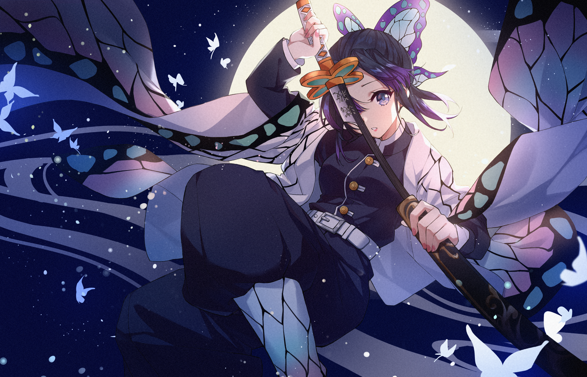
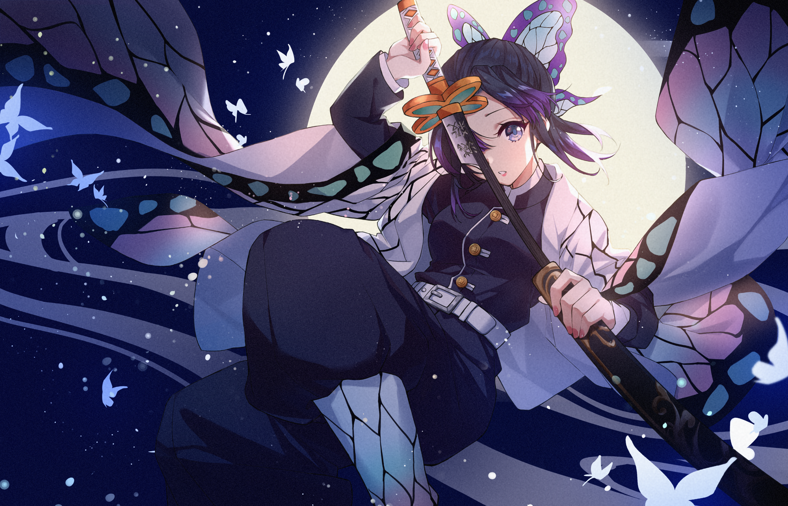

Tanjiro Kamado
Tanjiro Kamado, o protagonista de "Kimetsu no Yaiba" (Demon Slayer), é um jovem determinado a vingar sua família e salvar sua irmã, Nezuko, que foi transformada em um demônio. Com uma personalidade compassiva e corajosa, Tanjiro enfrenta ameaças sobrenaturais em sua busca por justiça e redenção.


 
